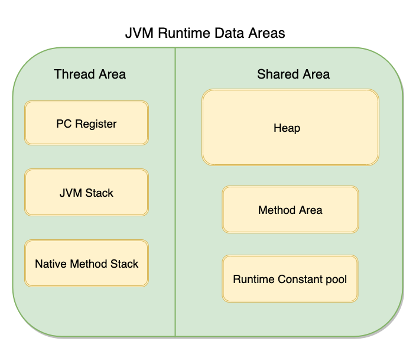
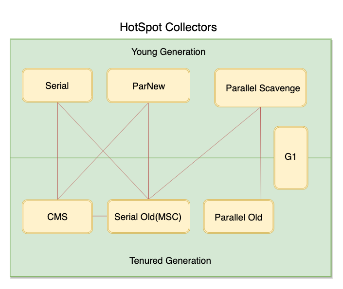

理解GC算法与收集器
Java语言最独有的特点之一就是有一套自治的内存管理模型，即JVM（Java Virtual Memory），它帮助我们管理对象的生存周期，所以我们在平时的开发任务中可以专注于功能的具体实现。在JVM有一个称为GC（Garbage Collection）的关键过程，它将会按照一定的规则去整理和清除内存中的对象。本文整理了几种不同的GC算法，学习它们将帮助我们了解当一个Java程序运行起来的时候，JVM到底是怎样管理内存的。
Java与C++之间有一堵由内存动态分配和垃圾收集技术所围成的“高墙”，墙外面的人想进去，墙里面的人却想出来。 – 《深入理解JVM》
JVM运行起来的时候，其内存主要分为6个部分，其中堆（Heap）是JVM存储大量对象的一块共享的内存，也是占比最大的一块区域，GC的主要工作就是对这块内存进行管理。如下图所示：

哪些对象需要回收
JVM如何判断一个对象是否需要被回收？主流的实现是通过一个叫可达性分析的方法来判定的，JVM会定义一系列的“GC Roots”，包含以下几种：
- 虚拟机栈中引用的对象
- 方法区中类静态属性引用的对象
- 方法区中常亮引用的对象
- 本地方法栈JNI（Native方法）引用的对象
从这些Roots开始向下搜索，走过的路程称为引用链，如果一个对象找不到一条引用链来与Roots相连的话，那它就将被第一次标记。确认需要被回收需要两次标记，第二次则是在一个称为F-Queue的队列中，JVM将会执行对象的finalize方法，如果方法执行完后该对象还是没有与GC Roots相连，则会被第二次标记，等待GC的回收（finalize方法在jdk9中已被置为Deprecated）。当GC开始工作的时候，这些可以被回收的对象就会按照一定规则被清理掉了，以下是常用的四种GC算法：
1.标记清除（Mark-Sweep）
标记清除是最基本的一种GC算法，首先就是标记好需要清理的对象，上文已经阐述过，紧接着第二步就是要把它们所占的内存清理掉。这个算法主要的问题就是在清除过后会留下大量不连续的内存空间，不利于在之后的程序中分配比较大的对象。
2.复制（Copying）
复制算法将JVM的内存切分为两个同样大的部分，程序使用的时候只使用其中的一个，当需要GC的时候，就把使用中的那一半内存里的存活对象复制到另一半内存，并且按顺序排列。它解决了内存碎片的问题，但是能使用的内存空间被减少了一半，代价过高。
复制算法在新生代的使用
现在大部分虚拟机都用复制算法回收新生代，因为新生代的存活率并不高，所以实际上内存不是对半划分的，内存会被分为一块较大的Eden空间和两块较小的Survivor空间，他们的比率是8:1，每次使用Eden和其中一块Survivor来存放对象，当发生GC的时候就把存活下来的对象拷贝到另一个Survivor中，如此反复。
3.标记整理（Mark-Compact）
标记整理类似于标记清除，不同的是所有的存活对象会被重新整理，重新占连续的内存，以便清除内存碎片。
4.分代收集（Generational Collection）
分代收集主要是将内存分为了新生代和老年代，并且结合了前面几种GC算法，在不同的代区中使用不同的算法。例如在新生代，由于一般情况下90%以上的新对象都不会持久，所以使用复制算法，只需要复制一小部分的存活对象即可。而因为老年代里，对象存活率比较高则使用标记清理或标记整理的算法来清除。
收集器
收集器就是结合这些GC算法的具体实现了，没有万能的收集器，只有在不同的场景下使用合适的收集器。以下讨论的收集器是基于JDK1.7Update14之后的HotSpot虚拟机，如下图所示：（有连线的表示可以搭配使用）

1.Serial收集器
Serial收集器是最基本的一款收集器，它是单线程工作的，而且工作的时候需要暂停所有的其它的用户线程，直到收集完毕。它的优势是简单有效，但是Stop The World时间太长不太友好，对于单个CPU以Client模式运行的虚拟机是个不错的选择。
2.ParNew收集器
ParNew是Serial的多线程版本，在新生代中只有它和Serial能与老年代的CMS收集器搭配使用。
3.Parallel Scavenge收集器
Parallel Scavenge是一个关注吞吐量的收集器，吞吐量指的是：用户线程的执行时间/(用户线程的执行时间+GC时间)。它提供自定义设置来动态控制吞吐量，例如要是关注GC停顿时间的话，使用-XX:MaxGCPauseMillis去控制GC停顿的最大时间，这个时候新生代空间将会缩小，相对的GC的频率也会变高点。要是关注吞吐量，则可以使用-XX:GCTimtRatio来直接控制最大吞吐量，虚拟机会根据当前系统信息动态调整状态以趋近于这个吞吐量。
4.Serial Old收集器
Serial Old是Serial的老年代版本，它可以与Parallel Scavenge搭配使用，或作为CMS的后背预案。
5.Parallel Old收集器
Parallel Old是Parallel Scavenge的老年代版本，在JDK1.6开始提供，之后在注重吞吐量或CPU资源敏感的场合都可以直接选取这两种搭配了。
6.CMS收集器
CMS（Concurrent Mark Sweep）的特点是：并发收集、低停顿，也可称为低停顿收集器（Concurrent Low Pause Collector）。
7.G1收集器
G1是目前最前沿的一款收集器，被视为JDK1.7中HotSpot的一个重要的进化特征。G1将整个Java堆划分为多个大小相同的区域，它跟踪每个区域里面的垃圾堆积的价值大小，每次根据允许的收集时间，优先回收价值最大的区域。